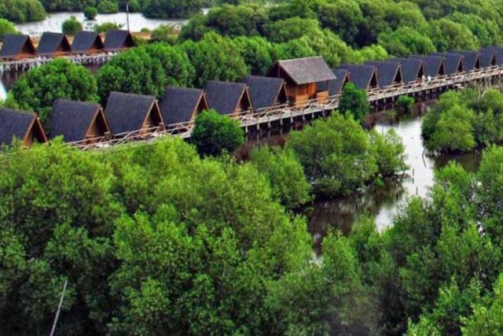
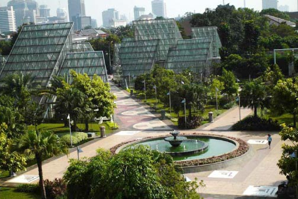

1. Kepulauan Seribu

Kepulauan seribu merupakan gugusan pulau yang terletak di utara provinsi DKI Jakarta dan termasuk kedalam wilayah kabupaten kepulauan seribu. dengan "ribuan" pulau, kamu dan teman kamu punya banyak pilihan untuk dijelajahi.mulai dari cottage di pulau bidadari, homestay di pulau untung jawa, hingga tenda camping di pulau air bisa kamu pilih sebagai tempat menginap kamu sesuai dengan preferensi kamu. banyak kegiatan yang bisa kamu dan teman kamu lakukan disini. Kamu bisa pergi ke pulau seribu melalui pelabuhan muara angke atau melalui pelabuhan ancol.
2. Wisata Mangrove Kapuk

Salah satu tempat eco wisata yang lagi hits di daerah Jakarta utara. merupakan daerah hutan Mangrove di daerah pesisir Jakarta Utara persisnya di daerah Kapuk. cocok menjadi tempat short escape buat kamu dan teman-teman kamu apabila sedang penat dengan kehidupan kota.
3. Ice Rink @Mall Taman Anggrek
Jalan-jalan ke mall di Jakarta? klasik. tapi ada yang berbeda dengan Mall Taman Anggrek. Mall yang terletak di daerah persimpangan Tomang, Grogol, Jakarta Barat ini memiliki ice rink untuk kamu dan teman kamu bermain ice skating di negara tropis. selain itu seperti mall pada umumnya, banyak tempat makan dimana kamu dan teman kamu bisa hang-out.
4. Taman Menteng

Taman yang terletak di tengah kota Jakarta ini berada di Jalan HOS Cokroaminoto, Menteng, Jakarta Pusat. Taman yang diresmikan sejak April 2007 oleh Gubernur Sutiyoso itu dibuka untuk umum. bak oase ditengah gurun pasir, taman menteng bisa menjadi tempat pilihan kamu dan teman kamu yang bosan dengan hutan "beton" yang ada di Jakarta dan sejenak menikmati alam.
Sebenarnya masih banyak tempat-tempat wisata di Jakarta yang gak bisa kamu lewatkan begitu saja. Setelah berkunjung ke tempat-tempat tersebut semoga mengubah persepsi kamu tentang kota Jakarta. Selamat menjelajah Jakarta!